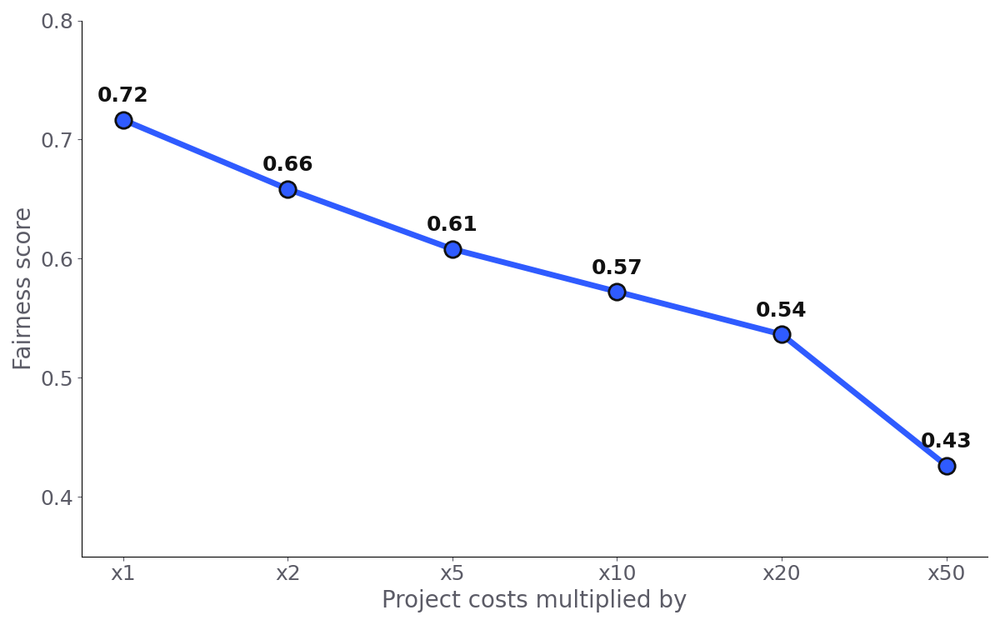
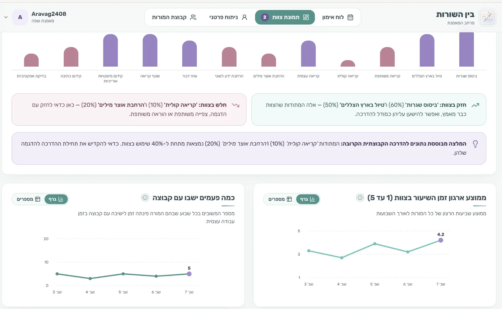
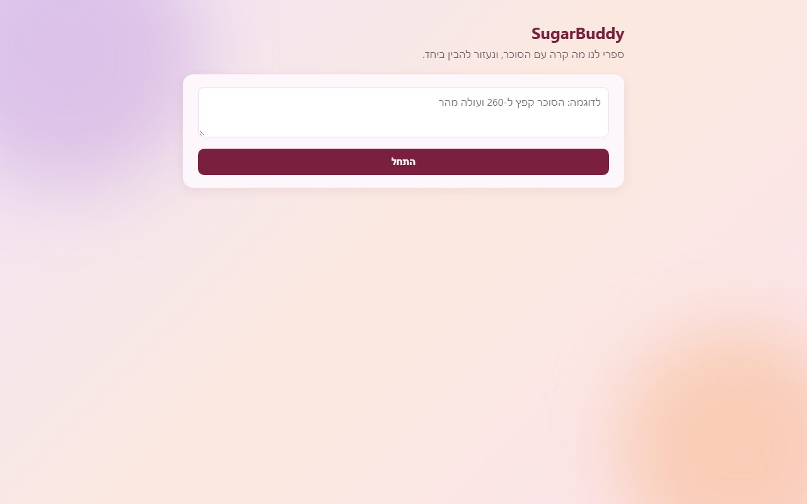
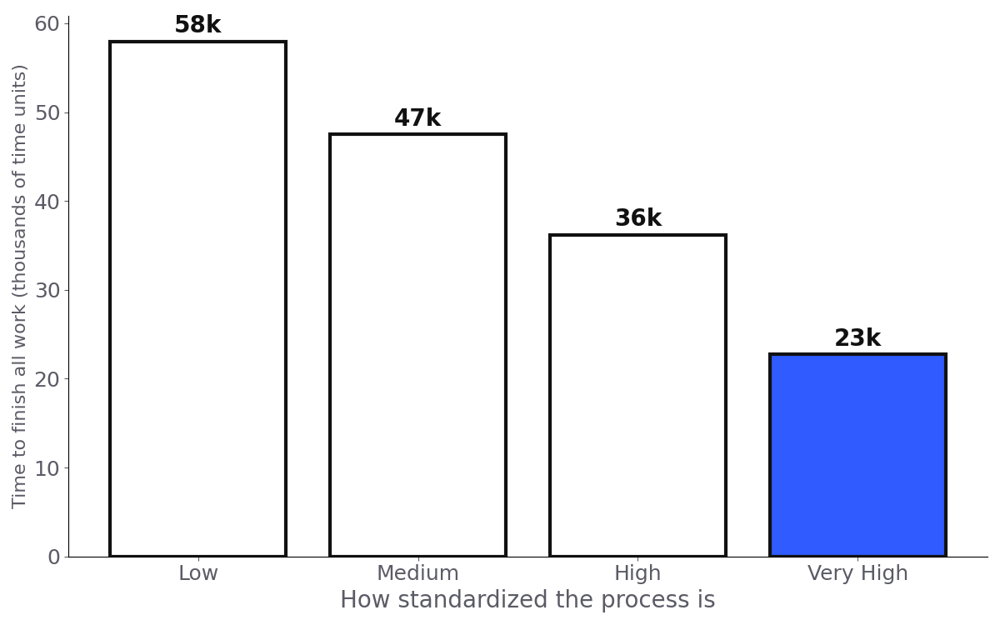

Work.
Products I built and problems I investigated, biggest first. Each one started with a problem someone actually had.

SugarBuddy
For teens with Type 1 diabetes and their parents. When glucose goes wrong, it runs a short check-in with the teen, an AI agent explains what probably happened, and the parent gets a calm next step. I built the core pipeline: the teen's check-in and the pattern detection.

AchvaLens
For Achva LGBT's reviewers. Paste a text or upload a file, and every LGBTQ+ term is marked green, yellow or red with an explanation. Reviewer decisions retrain the model.
Values Under Pressure
Do people do what they say they believe? I analyzed 42 players of a democracy simulation game, and built an AI grader for 480 written answers that agrees with experts as well as they agree with each other. The answer: values shift with the situation.

Mercury
A privacy audit of a RAG medical chatbot that promises confidentiality. Asking ordinary questions from a second account pulled strangers' health details into the AI's answers. I traced it to one missing check and mapped four fixes to GDPR.
SugarBuddy and Beyond
I turned SugarBuddy's check-in into a benchmark dataset that pairs sensor-style data with a teen's note, built a probe that catches notes that give the answer away, and made it a template I ran on nine more conditions.
Small projects
Shorter stories, from courses and a hackathon.

Fair city budgets, Warsaw 2023
Does a fairer way to split a city budget cost more? I tested a proportional voting rule, the Method of Equal Shares, on Warsaw's real 2023 participatory budget (78,904 voters). It beat the city's current rule on both welfare (+32%) and fairness (+8%). But as projects get more expensive, it slowly turns back into the old rule.


Between the Lines
A hackathon project with The Israeli Center for Educational Innovation: a workspace for teaching coaches. A weekly coaching board, five kinds of coaching activities, and a team view that shows which of 12 teaching methods are in use and recommends what to focus on next. I helped define the problem and the solution with the partner, then built the app.

SugarBuddy Agent
Where SugarBuddy started. You describe a glucose event in plain words, the agent asks the teen a few yes/no questions, may ask one follow-up, and gives the parent a short summary of the likely causes with a confidence level for each.

Does standardizing pay off?
A discrete-event simulation in Python of work moving through stages and handoffs, run 10 times at each of four levels of process standardization. Going from low to very high cut the time to finish by 61%, while the standardization itself cost only about 3% more.